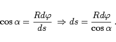
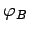

Inhalt Index DeskTop Bronstein

 Geometrie Sphärische Trigonometrie Berechnung sphärischer Dreiecke Loxodrome
Geometrie Sphärische Trigonometrie Berechnung sphärischer Dreiecke Loxodrome


Aus der Abbildung erkennt man den differentiellen Zusammenhang
|  | (3.247a) |
Integration über  liefert für die Bogenlänge s des Bogenstücks mit den Endpunkten und
liefert für die Bogenlänge s des Bogenstücks mit den Endpunkten und :
:
Ist A der Abfahrtsort und B der Zielort (gegißter Ort), so lassen sich bei Vorgabe von und s schrittweise aus (3.247b) zuerst  und danach gemäß (3.246b) berechnen.
Näherungsformel: Gemäß der obigen Abbildung erhält man mit Q=A und P=B nach einer Mittelung der geographischen Breiten den Ansatz (3.248a) für eine Näherungsformel zur Berechnung der angenäherten Bogenlänge l gemäß (3.248b):